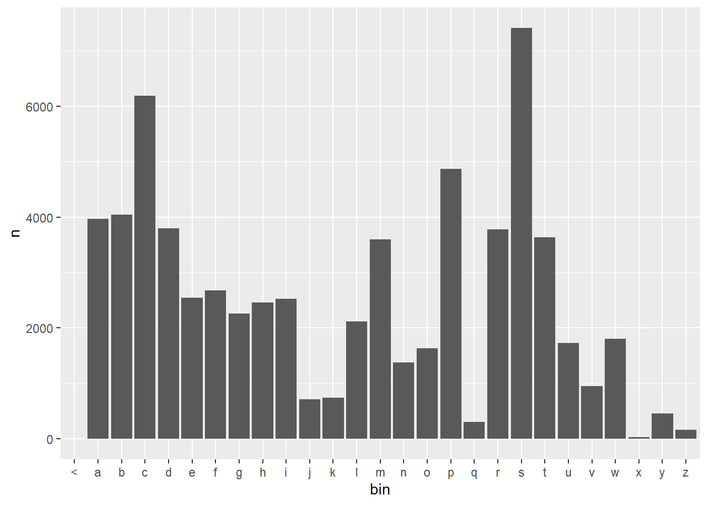
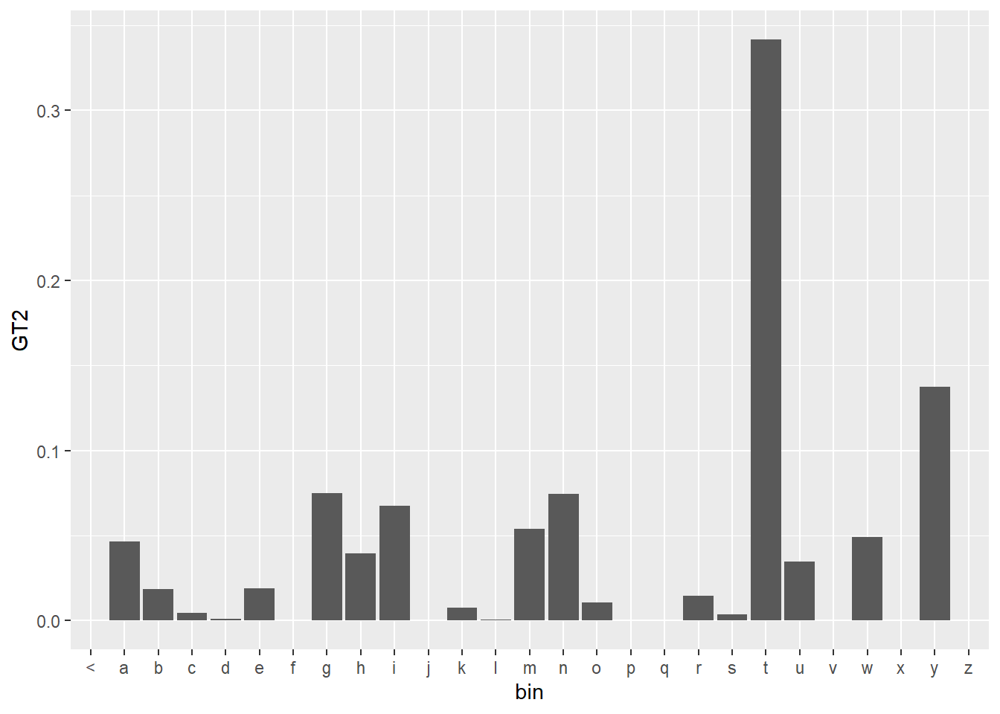
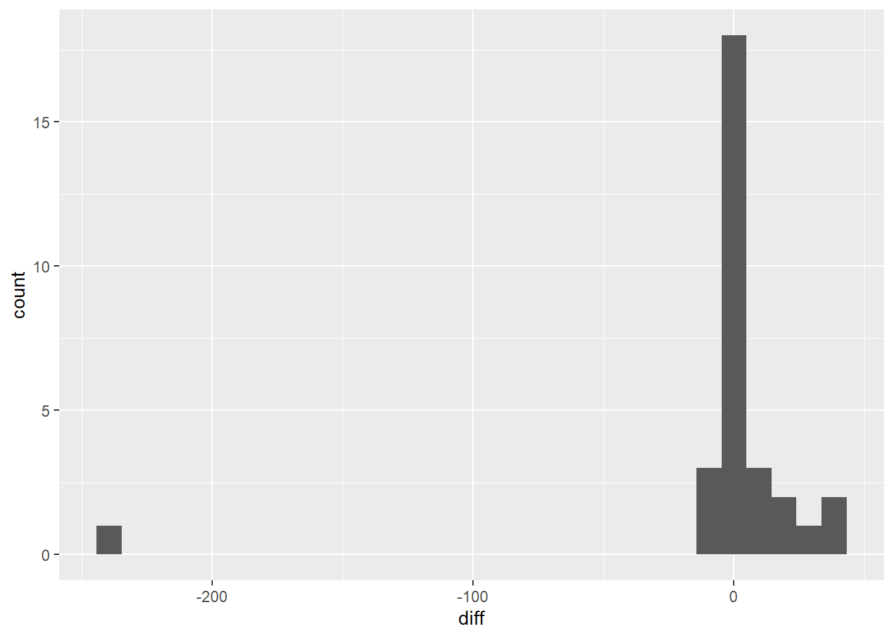
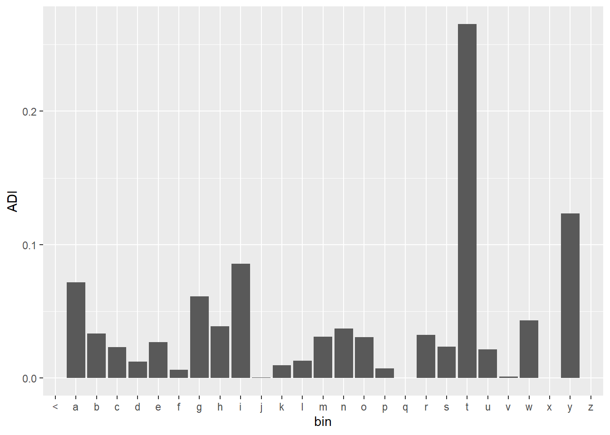

truetext <- reactive({
truetext <- input$text %>%
tibble(text=.) %>%
unnest_tokens(word, text, token="ngrams", n=1)
truetext[!truetext$word %in% voc$word,] <- "unk"
truetext})
maxuse <- reactive({
min(nrow(truetext()) + 1,maxn)
})
Description
This is the second part for the creation of a text prediction Shiny Application. From the previous post, we have developed and Corpus of text to start creating text prediction applications.
We have also explored the corpus, looking at the frequency of words in the vocabulary. It is now time to start to develop ngram models.
N-gram models
A ngram is a continuous sequence of tokens, where the order is determined by how many tokens are in the sequence. For our purpose, a token is created for each word in a sentence. Other tokens can be created, such as sentence in a paragraph or letters in a word. It really depends on your application needs.
A line of text can be broken down into ngrams in many ways. For example, the following text:
“The quick brown fox”
can be broken down to the following unigrams:
(“the”)(“quick”)(“brown”)(“fox”)
or to the following bigrams:
(“the quick”)(“quick brown”)(“brown fox”)
or to the following trigrams:
(“the quick brown”)(“quick brown fox”)
or to the single tetragram:
(“the quick brown fox”)
The process for creating tokens from text, tokenization, drops the text to lower case and removes all punctuation. For this application, I would recommend the unnest_tokens function from the tidytext package.
Ngrams can be used for predictive text by reserving the last word in the ngram as the predicted word.
Models
Stupid Back-off
A higher level of n-gram should provide a better predictive quality for our models. However, these higher n-grams have lower levels of occurrences. Each additional word included in the created n-grams, reduce the different possible solutions but should have a higher level of accuracy as there is more context provided to the model.
We need to create some shiny functions to help use determine the highest possible ngram model that we can use. The first function, turns the user input in unigram tokens, which does a lot of pre-processing for us. For words not in the vocabulary, we change the values to the ‘
The final function simply finds the minimum between the length of the user input and the highest level of ngram models. The result will be the highest degree of ngram that we can use. This is often refereed to as the “Stupid Back-off” method, as a higher order ngram is “backed-offed” to a lower level ngram.
Maximum Likelihood Estimation
The maximum likelihood estimation (MLE) is the simplest model to examine. We simply count all the occurrence where the all values from the user input match with the ngrams to the final word in the n-gram. The final for in the ngram is reserved for the predicted estimation.
\[p_x = \frac{C_x}{C} \]
Where \(p_x\) is the probability that the word x will be predicted, \(C_x\) is the count of the word x occurring, and \(C\) is the count of all words.
The MLE model produces an unbalanced model, where there a many values from the vocabulary that have zero probability of being predicted. We would like to address this issue by developing more complicated models.
The following plot is a sample distribution created with the MLE model. The predicted values are sorted into bins based on the first letter of the predicted value. Some bins/letters have no value and therefore will have no probability assigned to them.
df <- ngrams$three %>%
filter(word1 =="what", word2 == "is") %>%
select(word3, n) %>%
right_join(voc, by = c("word3" = "word")) %>%
mutate(bin = substr(word3,1,1)) %>%
group_by(bin)
df$n[is.na(df$n)] <- 0
df %>%
ggplot(aes(x = bin, y = n)) +
geom_bar(stat = "identity")Add One Smoothing
The simplest way to deal with the issue of zero probability values is to add one to all unseen counts. This is also referred to as Laplace Smoothing.
\[p_x = \begin{cases} \frac{C_x}{C} & C_x > 0 \\ \frac{1}{C} & C_x = 0 \end{cases} \]
The plot for the add one model is pretty easy to create from the previous sample. It is clear that there are some values now in each bin, so there is some probability to every word in the vocabulary. The heights of the bins are also increased, as there previously were words in each bin that had 0 occurrences now occurring once.
df <- ngrams$three %>%
filter(word1 =="what", word2 == "is") %>%
select(word3, n) %>%
right_join(voc, by = c("word3" = "word")) %>%
mutate(bin = substr(word3,1,1)) %>%
group_by(bin)
df$n[is.na(df$n)] <- 1
df %>%
ggplot(aes(x = bin, y = n)) +
geom_bar(stat = "identity")
Good Turing
In order to understand the Good Turing Smoothing, we need to introduce some new notation, \(N_C\), to represent the frequency of frequencies. The frequency of frequencies represents how often a number of occurrences will happen in or distribution. For example, \(N_0\) represents the word count in our vocabulary where there are no occurrences of that word in the distribution. \(N_1\) then represents the count of the words that have one occurrence. The frequency of frequencies is a one layer of abstraction from our counts. It is helpful to consider our previous plots where we created bins based on the first letter of the predicted word, but instead we are creating bins one how often our predicted words occur.
To create these \(N_C\) values, we can use the count function. The original values for ‘n’ were created with the count function, we can repeat it over the values of ‘n’ to create a count of counts which I have called ‘nn’. The plot is as expected, there are many words with a low number of counts and a few high count values.
df <- ngrams$three %>%
filter(word1 =="what", word2 == "is") %>%
select(word3, n) %>%
right_join(voc, by = c("word3" = "word"))
df$n[is.na(df$n)] <- 0
Nr <- count(df, n, name = "nn")
Nr %>%
head()# A tibble: 6 × 2
n nn
<dbl> <int>
1 0 64330
2 2 51
3 3 28
4 4 13
5 5 2
6 6 7The first intuition of the Good Turing is that the probability of something new, a word with a count of zero, should be assigned the probability for an event that occurred once. For this example, we have the very unlikely event that there are no counts of words that appear once, so we use the next available count(X). This will give the probability of all words with zero count, we will later divide it by the number of words with the count 0.
\[P_0 = \frac{C_1}{C} = \frac{C_x\cdot N_x}{\Sigma C_N\cdot N_N} \]
Since we have grouped the words by frequencies, we can use the product of all frequency of the frequencies by their count.
total <- sum(Nr$nn*Nr$n)
total[1] 1449Good Turing requires some additional calculations, so it is beneficial to add some columns to the dataframe at this point.
Nr <- Nr %>%
arrange(n) %>%
mutate(c= 0) %>%
mutate(sc = 0) %>%
mutate(GT = 0)This snippet of code is used to determine the probability for a word with zero count.
#the probability for unseen matches is set to the next value probability
Nr$GT[Nr$n==0] <- Nr$nn[2]*Nr$n[2]/totalAll other counts are to be adjusted. The Good Turing Smoothing is defined by the following equation:
\[C^*=\frac{(C+1)N_{C+1}}{N_C}\]
Where \(C^*\) is the adjusted count number. Since the general trend is that the frequencies decrease as the count increases, the term \(\frac{N_{C+1}}{N_C}\) will decrease the value for the count. This is the desired behaviour, as we want that probability to be distributed to zero counts.
One major issue that need to be addressed is that the frequency table is not continuous. There are holes as not all counts exist. To overcome this obstacle, we can create a regression model to fill in the missing values. A logistics regression model fits the values much better than a linear model.
Zn <- Nr[-1,] %>% add_row(n=Nr$n[nrow(Nr)]+1)
Zr <- Nr[-1,] %>% lm(log(nn)~log(n), data=.) %>% predict(newdata=Zn)
Zr <- exp(Zr)The next code chunk can look quite complicated. In this chunk, the corrected count, \(C^*\), are calculated. The variable j is used to control whether the regression model is used to substitute the value for \(N_{C+1}\).
#creates the new adjusted counts
j <- 0
for (i in 2:nrow(Nr)) {
Nr$c[i] <- (Nr$n[i]+1)*Nr$nn[i+1]/Nr$nn[i]
Nr$c[i][is.na(Nr$c[i])] <- 0
Nr$sc[i] <- (Nr$n[i]+1)*Zr[i]/Zr[i-1]
if(Nr$n[i+1]-Nr$n[i] > 1 | i == nrow(Nr)){
j <- 1}
Nr$GT[i] <- Nr$c[i]*(1-j) + Nr$sc[i]*j
}The probabilities at this time need two additional modifications, they need to be normalized as the regression model skews the overall probability and the probabilities need to be divided by the frequency counts to get a word specific probability.
#the specific prop from words with the same count
Nr$GT[Nr$GT < 0] <- Nr$nn[2]/total
Nr$GT <- Nr$GT/sum(Nr$GT)
Nr$GT2 <- Nr$GT/Nr$nnWe can now plot the completed ngram prediction for the Good Turing Smoothing. The plot looks similar to previous plots, but we plot the probabilities rather than the count values ‘n’.
df <- ngrams$three %>%
filter(word1 =="what", word2 == "is") %>%
select(word3, n) %>%
right_join(voc, by = c("word3" = "word")) %>%
mutate(bin = substr(word3,1,1)) %>%
group_by(bin)
df$n[is.na(df$n)] <- 0
df %>%
left_join(select(Nr,n,GT2), by = "n") %>%
ggplot(aes(x = bin, y = GT2)) +
geom_bar(stat = "identity")
Absolute Discounting
Good Turing Smoothing is an effective model, but man can it be complicated. One observation that you can make when looking at the values for \(C\) and \(C^*\) is that there is nearly constant discounting. The distribution in our example is skewed, but we can see that the most common value is between 0 and 1.
Nr %>%
select(c,sc) %>%
mutate(diff = c-sc) %>%
ggplot(aes(x=diff)) +
geom_histogram()
This would suggest that we could significantly simplify the adjusted counts calculations by subtracting a constant value. The algorithm is described by the following equation:
\[p_x = \frac{C_x - d}{C} + \lambda \cdot p_{unigram} \]
where ‘d’ is the discounting amount, \(\lambda\) is the Interpolation rate and \(p_{unigram}\) is the unigram probability based on the MLE.
discount <- 0.75
ADI <- df %>%
ungroup() %>%
select(word3, n) %>%
mutate(ADI = (n - discount)/sum(n))
ADI$ADI[ADI$ADI < 0 ] <- 0As previously mentioned, the unigram probability is calculated by applying the MLE to the unigram counts.
unigram.prop <- ngrams$one %>%
mutate(prop = n / sum(n))The interpolated weight (\(\lambda\)) can be found by finding the probability that was discounted.
uni.wt <- 1 - sum(ADI$ADI)
ADI <- ADI %>%
add_column(uni = unigram.prop$prop*uni.wt) %>%
mutate(ADI = ADI + uni, .keep = "unused")We can see that the plot of the probabilities for the absolute discounting is very similar to the Good Turing plot, but it was much easier to understand and calculate.
ADI %>%
mutate(bin = substr(word3,1,1)) %>%
group_by(bin) %>%
ggplot(aes(x = bin, y = ADI)) +
geom_bar(stat = "identity")
Kneser-Ney
The issue with Absolute Discounting is the reliance on the unigram probabilities. The unigram probability doesn’t provide any contextual information. We would rather rely on the continuation probability. Rather than looking at how often the word occurs, the continuation probability looks at how many bigrams the word completes. The Kneser-Ney model follows this equation:
\[p_x = \frac{max(C_x - d, 0)}{C} + \lambda \cdot p_{continuation} \]
The next chunk of code is very similar to the code used in the absolute discounting model.
KNS <- df %>%
ungroup %>%
select(word3, n) %>%
mutate(KNS = (n - discount)/sum(n))
KNS$KNS[KNS$KNS < 0 ] <- 0
cont.wt <- 1 - sum(KNS$KNS)Continuation Probabilities
The following code is used to determine the continuation probabilities. Since the highest order ngram is six, the continuation probability needs to be calculated for six different ngram series.
cont.prop.func <- function(word, ngrams){
out <- ngrams %>%
filter(.[,ncol(ngrams)-1] == word) %>%
nrow()
out / nrow(ngrams)
}
cont.prop <- list()
cont.prop$one <- tibble(word=voc$word, prop = ngrams$one$n/sum(ngrams$one$n))
cont.prop$two <- tibble(word=voc$word, prop = map_dbl(word, cont.prop.func, ngrams=ngrams$two))
cont.prop$three <- tibble(word=voc$word, prop = map_dbl(word, cont.prop.func, ngrams=ngrams$three))
cont.prop$four <- tibble(word=voc$word, prop = map_dbl(word, cont.prop.func, ngrams=ngrams$four))
cont.prop$five <- tibble(word=voc$word, prop = map_dbl(word, cont.prop.func, ngrams=ngrams$five))
cont.prop$six <- tibble(word=voc$word, prop = map_dbl(word, cont.prop.func, ngrams=ngrams$six))
saveRDS(cont.prop, "cont.prop.rds")The difficulty is with finding the continuation probability. After they are found, it is pretty easy to add them to the model.
KNS$KNS <- KNS$KNS + cont.prop$three$prop*cont.wt
KNS %>%
mutate(bin = substr(word3,1,1)) %>%
group_by(bin) %>%
ggplot(aes(x = bin, y = KNS)) +
geom_bar(stat = "identity")Shiny App
With all the models created, we can bundle it together in a single Shiny Application. This Shiny Application retrieves the user’s input and attempts to predict the next word. A table is generated to summarize the most highly predicted word. Since there are five different models, there are five different rows. A plot is generated for each model where the predicted words are in bins with other words with the same first letter.
Photo by Jaredd Craig on Unsplash